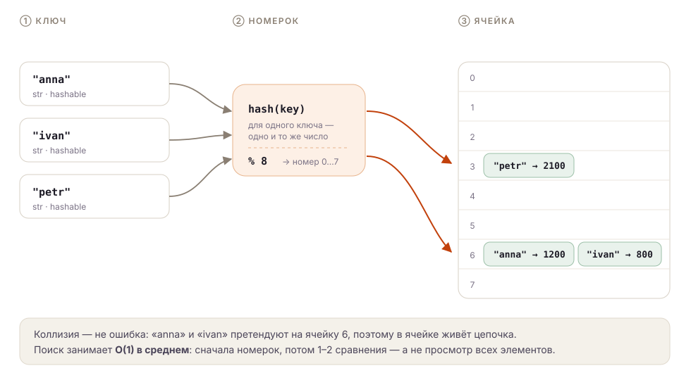
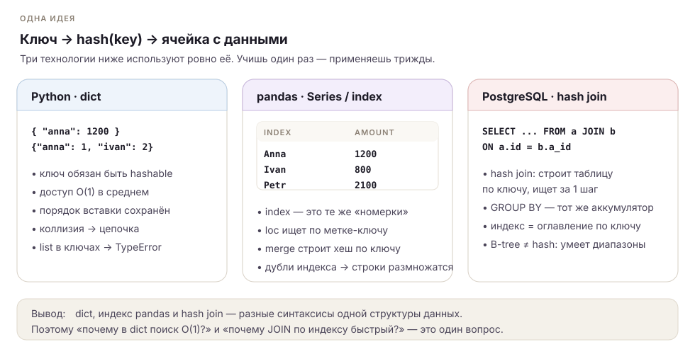

dict: шкаф с номерками Почему поиск по ключу не зависит от размера словаря
dict — первая структура, которую backend-разработчик использует каждый день:
JSON-ответ, конфиг, счётчик, кэш. Понять её устройство один раз — значит понять, зачем в pandas есть
индекс, а в SQL — индекс и hash join.
01Зачем это backend-разработчику
Словарь — не «ещё одна коллекция». Это основной способ сказать в коде: «вот предмет, найди его по имени за одно действие, а не за тысячу». Почти всё, что делает backend, — это поиск по ключу.
- JSON из API — это
dictпослеjson.loads(). Обращение по отсутствующему ключу роняет сервис;.get()— нет. - Кэш и реестры — «ключ → готовый ответ», «ключ → функция-обработчик», «ключ → настройка».
- Счётчики и группировки —
Counterиdefaultdict. Ровно та же механика, что вgroupbyиGROUP BY. - Собеседование — «почему dict быстрый?», «почему ключи должны быть hashable?» — это проверка того, понимаете ли вы хеш-таблицу, а не заучили ли определение.
Если вы можете объяснить, почему {["anna"]: 1} — ошибка, а {("anna",): 1} — нет, — тему можно считать освоенной на уровне 2.
02Ассоциация-якорь: гардероб
dict — это театральный гардероб. Вы сдаёте пальто — вам дают номерок. Вернувшись, вы не ищете пальто среди тысячи других: вы называете номер, и гардеробщик идёт сразу к нужной вешалке.
Ключ — пальто. hash(key) — номерок. Ячейка памяти — вешалка. Значение — само пальто.
Метафора сразу объясняет главное ограничение. Пальто можно перешить — номерок станет неверным. Поэтому ключ обязан быть неизменяемым: если объект поменяется после того, как его положили в словарь, его «номерок» перестанет указывать на его ячейку — и значение станет невозможно найти.
Отсюда же два следствия, которые часто спрашивают на собеседовании. Во-первых, list
нельзя использовать как ключ: список изменяем. Во-вторых, tuple можно — но только
если все его элементы тоже hashable: ("Ivan", ["IT"]) уже нет.
03Ассоциативный ряд: восемь звеньев
Прочитайте ряд сверху вниз один раз, затем попробуйте воспроизвести по памяти. Это и есть «объяснить внутреннюю логику» — третий уровень владения.
- Ключто, что мы знаем:
"anna" - hash()превращает ключ в число — детерминированно
- % размерчисло укладывается в диапазон ячеек
- Ячейкаадрес, по которому лежит пара «ключ → значение»
- Коллизиядва ключа претендуют на одну ячейку
- Разрешениецепочка или пробирование: как договориться
- Load factorячеек становится мало — таблица растёт
- O(1)в среднем; O(n) — если все ключи в одном бакете
Обратите внимание: «коллизия» стоит в середине ряда, а не в конце. Это не аварийная ситуация, а штатный режим работы любой хеш-таблицы: ключей бесконечно много, ячеек — конечно.
04Схема, которую стоит уметь нарисовать

Воспроизведите эту картинку на бумаге, когда будете отвечать на вопрос «как устроен dict». Три колонки и одна стрелка с изломом — этого достаточно, чтобы ответ звучал как понимание, а не как пересказ.
05Как это устроено на самом деле
Порядок действий при поиске значения по ключу:
- Считается
h = hash(key). Для строк он рандомизирован между запусками процесса — это защита от подбора коллизий. - Номер ячейки получается из
h: в CPython этоh & mask, гдеmask = размер - 1. Размер таблицы — степень двойки, поэтому маска работает как остаток от деления, только быстрее. - По номеру читается запись. Сначала сравниваются сами объекты ключа (быстрая проверка по идентичности), затем — равенство
==. - Если ключ не совпал — пробирование: следующая ячейка вычисляется по формуле с «возмущением» (perturb), которая перемешивает последовательность пробегов. Так разрешаются коллизии.
- Когда таблица заполнена примерно на две трети, она расширяется, и все ключи пересчитываются. Поэтому вставка — амортизированно O(1), хотя отдельная вставка может быть дорогой.
В учебниках коллизии решают «цепочками» — в ячейке хранится список. В CPython используется открытая адресация: цепочек нет, свободная ячейка ищется пробированием. На схеме выше показана общая идея; если спросят про детали реализации — говорите про пробирование, это точнее.
Порядок вставки и сортировка — разные вещи
С Python 3.7 dict гарантированно помнит порядок вставки. Это не значит, что словарь
отсортирован: {"b": 2, "a": 1} останется в порядке «b, a». Если нужен порядок по
ключу — сортируйте явно: dict(sorted(d.items())).
| Вопрос | dict | list |
|---|---|---|
| Доступ по ключу | d[k] → O(1) в среднем | нужен перебор → O(n) |
| Порядок | порядок вставки | порядок добавления |
| Ключи | только hashable | индексы 0..n-1 |
| Что хранит | пары ключ → значение | элементы по порядку |
| Типичное применение | поиск, счётчики, кэш | последовательность, сортировка, срезы |
06Лаборатория: запустить и увидеть
Ниже — фрагменты файла snippets/01_dict_lab.py из этого проекта. Вывод настоящий:
он получен запуском на Python 3.12. Ваши числа будут немного другими — время зависит от машины, а
hash() меняется от запуска к запуску.
Шаг 1. Увидеть «номерки» и коллизию
BUCKETS = 8
def toy_hash(key: str) -> int:
"""Учебный «номерок»: сумма кодов символов по модулю числа ячеек."""
return sum(map(ord, key)) % BUCKETS
for name in ["anna", "ivan", "petr"]:
print(f"{name:5} → сумма {sum(map(ord, name)):4} → ячейка {toy_hash(name)}")
Два разных ключа дали одну ячейку. Это и есть коллизия — и именно поэтому в ячейке хранится не одно
значение, а структура, умеющая хранить несколько. Настоящий hash() устроен сложнее
(и рандомизирован), но идея та же.
Шаг 2. Сравнить поиск в списке и в словаре
import time
users = [f"user{i}" for i in range(1_000_000)] # список
by_name = {u: i for i, u in enumerate(users)} # словарь
t0 = time.perf_counter(); "user999999" in users; t_list = time.perf_counter() - t0
t0 = time.perf_counter(); "user999999" in by_name; t_dict = time.perf_counter() - t0
print(f"list: {t_list * 1000:.2f} ms")
print(f"dict: {t_dict * 1_000_000:.2f} µs")
Список честно просматривает элементы, пока не найдёт нужный, — O(n). Словарь вычисляет номерок и прыгает в ячейку — O(1). На миллионе элементов разница в тысячи раз; на десяти элементах вы её не заметите, и это нормально: сложность — про рост, а не про микросекунды.
Шаг 3. Три способа обновить счётчик
order = {"user": "Anna", "amount": 1200}
order.get("city") # None: ключ НЕ создан
order.get("city", "—") # "—"
order.setdefault("currency", "RUB") # "RUB": ключ создан
"city" in order, "currency" in order # (False, True)
try:
order["city"] += " Москва" # KeyError: ключа ещё нет
except KeyError as e:
print("KeyError:", e)
Разница между get и setdefault — не стилистическая.
get только читает, setdefault изменяет словарь.
А defaultdict делает это ещё и неявно при чтении — об этом в главе 06.
07Мост: та же идея в pandas и SQL
Здесь гайд делает то, ради чего он написан: показывает, что dict, индекс pandas и
hash join — три реализации одной структуры данных. Выучив одну, вы бесплатно
получаете две.

Один алгоритм, три записи
Задача: посчитать сумму заказов по каждому пользователю.
orders = [
{"user": "Anna", "amount": 1200},
{"user": "Ivan", "amount": 800},
{"user": "Anna", "amount": 500},
]
totals = {}
for order in orders:
user = order["user"]
totals[user] = totals.get(user, 0) + order["amount"]
# то же самое, но короче:
from collections import defaultdict
totals2 = defaultdict(int)
for order in orders:
totals2[order["user"]] += order["amount"]
import pandas as pd
df = pd.DataFrame(orders)
df.groupby("user")["amount"].sum() # тот же аккумулятор, но векторно
SELECT user_id, SUM(amount) AS total FROM orders GROUP BY user_id ORDER BY total DESC;
Во всех трёх случаях: разложить строки по ключу → накопить значение → отдать результат. Разница — в том, где это происходит: в интерпретаторе, в векторизованном коде или в базе.
Важная деталь честности: индекс pandas для строковых меток действительно использует хеш-таблицу, но
RangeIndex — это арифметика, а не хеш. На собеседовании такая точность ценится
выше, чем «всегда хеш».
08Пять ошибок, на которых спотыкаются
{["anna"]: 1} падает с TypeError: unhashable type: 'list'. Но хуже — свой класс: если определить __eq__ и забыть __hash__, Python сделает объект нехешируемым молча.
frozen=True в dataclass.counts[word] += 1 на новом слове даёт KeyError: справа читается отсутствующий ключ.
counts[word] = counts.get(word, 0) + 1, Counter или defaultdict(int).d.get(k) не создаёт ключ. defaultdict создаёт его при чтении d[k] — и после проверки k in d вы неожиданно получите True.
get. Для накопления — defaultdict осознанно.Добавление или удаление ключа внутри for k in d: бросает RuntimeError: dictionary changed size during iteration.
for k in list(d):.if user in users_list внутри for по другому списку — это O(n²). На 10 000 элементов уже больно.
set или dict — и проверка станет O(1).dict хранит порядок вставки. Если данные вставили в случайном порядке, вывод тоже будет случайным.
sorted(d), sorted(d.items(), key=...).09Вопросы с собеседования
Хороший ответ на любой из них строится по одной схеме: тезис → механика → ограничение. Тезис — что это. Механика — как работает. Ограничение — когда это неверно. Именно третья часть отличает «читал статью» от «понимаю».
Почему dict обеспечивает быстрый поиск?
Потому что ключ не перебирается, а вычисляется: hash(key) даёт номер ячейки, и остаётся сравнить один-два ключа. В среднем — O(1), независимо от размера словаря.
Ограничение: O(1) — в среднем. При плохой хеш-функции (или намеренной атаке коллизиями) все ключи попадают в одну ячейку, и поиск деградирует до O(n).
Что такое hashable объект?
Объект, у которого есть __hash__ и __eq__, причём хеш не меняется за время жизни объекта. Практически — неизменяемый: int, str, tuple из hashable элементов, frozenset.
Контракт: если a == b, то hash(a) == hash(b). Обратное неверно — равные хеши не означают равенство, это и есть коллизия.
Почему ключи словаря должны быть hashable?
Без хеша невозможно вычислить адрес ячейки, а без неизменяемости — гарантировать, что адрес не устареет. Если ключ изменится после вставки, поиск по нему будет искать в другой ячейке и не найдёт значение.
Чем dict отличается от set?
Внутри — одна и та же хеш-таблица. set — это словарь без значений: важно только наличие ключа. Поэтому set отвечает на вопрос «есть ли элемент?» за O(1) и умеет пересечения и объединения.
Практическое правило: нужна проверка уникальности или операции над множествами — set; нужно связать ключ со значением — dict.
Как работает dict.get() и чем отличается от d[k]?
d[k] требует ключ и бросает KeyError, если его нет. d.get(k) возвращает None, если ключа нет, d.get(k, default) — заданное значение. Важно: get никогда не создаёт ключ.
Ловушка: d.get(k, 0) += 1 не работает — это выражение, а не присваивание по ссылке.
Чем defaultdict отличается от обычного dict?
При обращении к отсутствующему ключу defaultdict вызывает фабрику (int, list, set) и вставляет результат. Это удобно для накопления: totals[user] += amount работает сразу.
Побочный эффект: простое чтение d[missing] меняет словарь — после него missing in d истинно. И .get() фабрику не вызывает.
Как удалить дубликаты, сохранив порядок?
С Python 3.7 самый простой способ использует порядок вставки: list(dict.fromkeys(items)). Альтернатива с явным множеством: seen = set() и добавление только новых.
Если порядок не важен — list(set(items)). Если элементы нехешируемы (например, словари) — придётся сравнивать вручную, и это уже другой разговор.
Почему поиск по ключу dict быстрее поиска в списке?
Список не знает, где лежит элемент: нужно проверить каждый — O(n). Словарь вычисляет адрес по ключу — O(1). На 10 элементах разница не видна, на миллионе — в тысячи раз.
Ограничение: словарь тратит память на таблицу и на сами ключи; для «просто пройтись по всем» список дешевле.
10Три задачи: сначала своя попытка
Правило гайда: решение открывается после того, как вы написали своё. Даже если оно неверное — сравнение полезнее готового ответа.
01 Заказы по пользователям
Дан список заказов (из практики недели 1). Не используя pandas, получите: сумму и количество заказов каждого пользователя, затем — пользователя с максимальной суммой.
orders = [
{"id": 1, "user": "Anna", "amount": 1200},
{"id": 2, "user": "Ivan", "amount": 800},
{"id": 3, "user": "Anna", "amount": 500},
{"id": 4, "user": "Petr", "amount": 2100},
]
Показать решение и разбор
totals, counts = {}, {}
for o in orders:
u = o["user"]
totals[u] = totals.get(u, 0) + o["amount"]
counts[u] = counts.get(u, 0) + 1
best = max(totals, key=totals.get) # ключ с максимальным значением
print(totals, counts, best, sep="\n")
Что здесь важно. max(totals, key=totals.get) — идиома «ключ с максимальным значением»; без key вы получите максимальный ключ по алфавиту. Два словаря вместо одного — нормально, но defaultdict читается короче.
02 Инверсия словаря
Дан словарь «город → список людей». Постройте обратный словарь «человек → город». Обратите внимание: один человек может по ошибке оказаться в двух городах — это надо обработать явно.
Показать решение и разбор
cities = {"Москва": ["Anna", "Ivan"], "Казань": ["Petr", "Anna"]}
person_to_city = {}
for city, people in cities.items():
for person in people:
if person in person_to_city:
print(f"дубль: {person} в {city}, уже был в {person_to_city[person]}")
person_to_city[person] = city
print(person_to_city)
Что здесь важно. Инверсия «многие-к-одному» всегда теряет данные — здесь мы явно проговариваем потерю, а не молча затираем. Это ровно та же проблема, что «многие-ко-многим» в merge и двойной JOIN: молчаливое размножение строк.
03 Конфиг с значениями по умолчанию
Есть настройки defaults и пользовательские overrides.
Соберите итоговый конфиг, не изменяя исходные словари, и выведите ключи, которые пользователь переопределил.
Показать решение и разбор
defaults = {"timeout": 30, "retries": 3, "debug": False}
overrides = {"timeout": 60, "debug": True}
config = {**defaults, **overrides} # новый dict, исходные не тронуты
changed = set(overrides) & set(defaults) # что реально переопределено
print(config, changed)
Что здесь важно. {**a, **b} создаёт новый словарь — это не «слияние на месте». Обратный к update, который меняет a. И set(overrides) & set(defaults) — та самая операция пересечения множеств, которая в pandas называется index.intersection, а в SQL — INTERSECT.
11Чек-лист освоения
Отмечайте только то, что можете сделать без подсказок. Прогресс сохраняется в браузере и виден в оглавлении.
Если отмечено всё — тема на уровне 2. Уровень 3 — суметь объяснить коллизии и пробирование так, чтобы собеседник понял с первого раза.